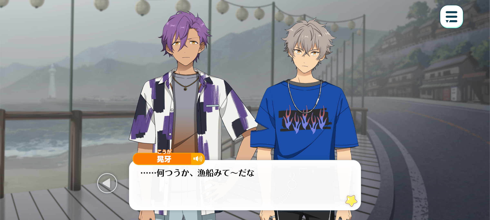
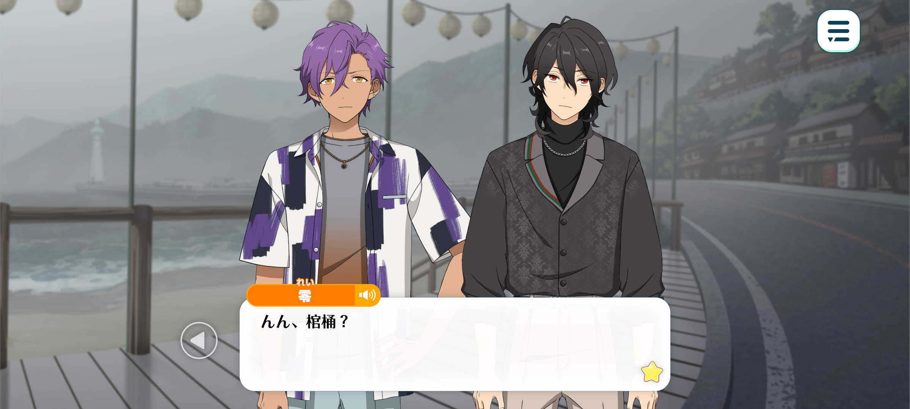
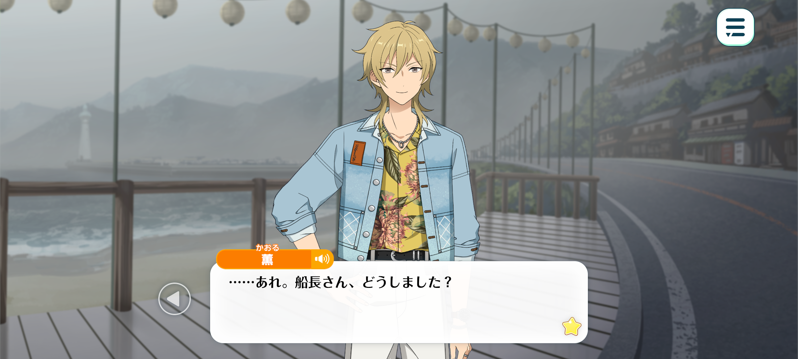
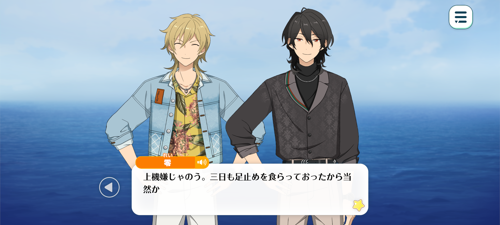
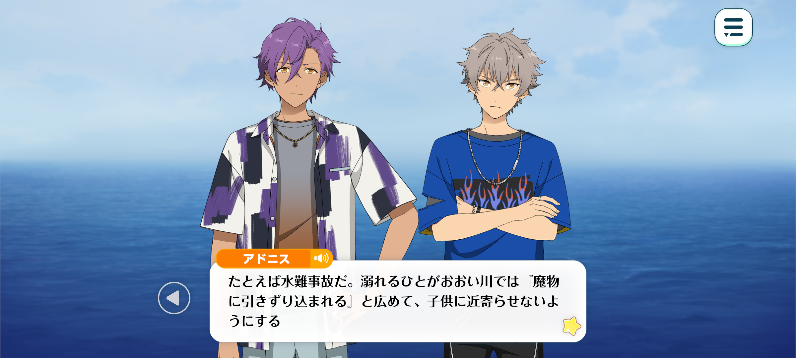
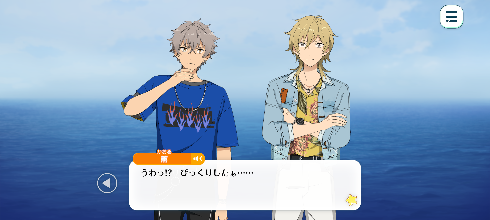

Velvet Ship
Haul To The Wind / Chapter 2


Time: Thirty minutes later

Adonis: Is this the boat we are to borrow?
Koga: …Looks like a fishin’ boat.
Kaoru: That’s because it is a fishing boat. Its name is written right there on the side in huge letters.
The model’s a little old, but the engine sounds healthy. It’s clearly been looked after properly.
Rei: Indeed. She appears to be a rather nimble little vessel. Her size should make her quite responsive at the helm, which will be useful should we find ourselves struggling through the fog.
Kaoru: Yup! Perfect for a quick trip to the island and back!
Hopefully it’ll go a little better than last time, when we ended up sinking off the coast of that deserted island. [1]
Koga: ...Oh, god. Yeah, that was horrible.
Kaoru: Well, I got to see that legendary cove so, it wasn’t all bad.
Adonis: Yes. Although becoming stranded is certainly something we should avoid repeating, it was nevertheless a valuable experience in survival.
…Hm.
Kaoru: What’s up, Adonis-kun?
Adonis: Sakuma-senpai, don’t we need to prepare your coffin?

Rei: My coffin?
Adonis: Yes. You cannot cross the sea without your coffin lined with soil from your home town. You brought it with you to that deserted island, didn’t you?
Koga: Oh yeah, I remember that. That’s what caused the boat t’capsize
Rei: Ah, yes. I suppose it did...
It is only a short distance we must cross today, and the island is already visible from here. I see no reason for concern.
Besides, I have brought a small quantity of soil from my hometown with me, just in case. I’m sure this crossing shall be an entirely uneventful one.
Adonis: I see. That is reassuring to hear.
Rei: Mhm. Trust in me.
Adonis: I will always trust you, Sakuma-senpai.
Koga: I jus’ had a fiddle around in the captain's chair, but there’s so many gauges ‘n levers ‘n buttons ‘n shit. I wouldn’t even know where t’start with this thing.
You sure you know how t’drive it, Hakaze-senpai?
Kaoru: Yup! Leave it to me. I have my licence after all.
I never thought something I picked up just because I love the ocean would actually come in handy. Guess you never know when a hobby’ll prove useful.

…Oh, Captain, what can I do for you?
“Are we really going?” Yes, no matter what, we need to cross today.
It’s okay. It’s only a short distance, and even with the fog this thick, we can still make out the island from here.
I checked the radar a little while ago, too. Everything’s in tip-top shape.
More importantly… Are you really sure you’re okay with lending us this boat?
I know this sounds a little strange coming from the person borrowing it, but you’re certain us taking her out won’t cause you any trouble…?
…I see. Then, that’s a relief.
I’m probably not making the best impression by ignoring the locals’ warning, but I really don’t want to cause you any more trouble than I already have.
Don't worry. We'll bring her home safe and sound
This boat means a lot to this Captain, and it would be a huge bother if we became another victim to the legend.
Now then, shall we get going?

♪~♪~♪
Rei: You are in remarkably high spirits. Well, I suppose after three days waiting around, such enthusiasm is only natural.
Kaoru: Yup. The sea breeze feels amazing~♪
I wish it were a little bit clearer. But then again, I wouldn’t have been able to drive myself and it would probably be a little too bright for Rei-kun. This weather’s probably a bit more your tempo, huh?
Kaoru: Precisely. Had there been no clouds, the sunlight reflecting upon the sea would have surely reduced me to ash.
Remind me, Kaoru-kun. Why is it that you have a boating license?
Kaoru: Mm~. There’s no special reason, really… I guess it’s because I love the ocean?
I’ve spent so much time around the water that I’m pretty familiar with it. And having a licence means I can go wherever I want, whenever I want.
Out at sea, there’s no dead ends. You’re free. It feels like you could go anywhere, as long as you’ve got your back to the wind and the waves beneath you.
Of course, there's the right of way of other boats you need to keep clear of, regulations to follow, all that stuff. But even with those restrictions, the sea still feels so much freer than dry land.
I wanted that feeling. So, before I even really realised what I was doing, I’d sent off my application.
Rei: Ohoho. You truly do live up to your name, don’t you, Kaoru-kun? [2]
Kaoru: I guess so~. Though, I’m only licensed on paper. I don’t actually own a boat and I never seem to have enough time to rent one.
So I guess today’s a good opportunity to get some real practice in. Then again, three people are relying on me to get them safely to the other side, so I’m a little nervous.
Still, there’s no traffic around, and I can see the island from here. We should be fine.
Koga: ...Really? There’s no other boats out here?
I can’t believe the locals actually bought that story! They took it so seriously.

Adonis: You shouldn’t underestimate the power of folklore, Oogami.
Although many such stories become exaggerated over time, they often originated from a genuine fear of nature.
Take drowning accidents, for example. If many people have drowned in the same river, a story might emerge about a monster who lives beneath the water and drags people under.
By spreading such a rumour, people could discourage children from going near dangerous places. The supernatural explanation may not have been true, but it served a purpose. That is the wisdom of our ancestors.
Koga: Tch. I get it but still...
So, what, you guys actually believe there’s a ghost ship out there?
Rei: Hm…I suppose I believe it, to some extent.
Though it seems considerably more likely that an ordinary vessel was wrecked here than that a ghost ship has taken to these waters.
Most supernatural occurrences can be explained by science nowadays. It is a rather unromantic conclusion, I admit. But I suppose life cannot always consist of beautifully crafted stories.
Koga: Right! A fuckin’ ghost ship, ha! Bullshit, absolute bullshit!
Kaoru: ...Hm? Did you guys feel that? Feels like the temperature just dropped.
And the air just got a whole lot saltier. I wonder why...
Rei: Hm, most peculiar. The fog was certainly thick, but I do not recall it being quite so cold.

Koga: —aaaHHHHHH!?
Kaoru: Huh!? You scared me, man!
What’s with the sudden screaming? I almost sent us flying!
Koga: T-there… over there! Look...!
Adonis: ...hm? A big shadow...? Is that a sailboat...?
Koga: I-it’s a— it’s a ghost ship! AAAAAAAAAHHHHH!?
- Reference to the Event story “Scorching Hot!” where fine and UNDEAD go on holiday together but their boat starts sinking lol
- kaorus name basically means ‘gentle breeze’